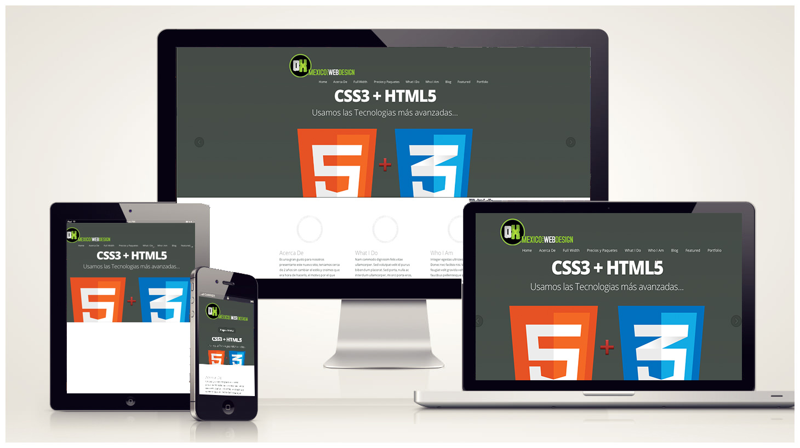

Creacion de Paginas Web
El diseño web es una actividad que consiste en la planificacion, deiseño implementacion y mantenimiento de sitios web. No es simplemente la implementacion del diseño convencional ya que se abarcan diferentes aspectos como el diseño grafico web, diseño de interfaz y experiencia de usuario, como la navegabilidad, iteratividad, usabilidad, arquitectura de la informacion; iteracion de medios, entre los que podemos mencionar audio, texto, imagen, enlaces, video y la iptimizacion de motores de busqueda. A menudo muchas personas trabajan en equipos que cubren los diferentes aspectos del proceso de diseño, aunque existen algunos diseñadores independientes que trabajan solos.
El diseño web ha visto una amplia aplicacion en los sectores comerciales de internet especialmente en la World Wide Web. A menudo la web se utiliza como medio de expresion plastica en si. Artistas y creadores hacen de las paginas en internet un medio mas para ofrecer sus producciones y utilizarlas como un canal mas de difusion de su obra, El diseño web implica conocer como se deben utilizar cada uno de los elementos permitidos en el HTML, es decir, hacer un uso correcto de este lengujae dentro de los estandares establecidos por la W3C y en lo referente a la web semantica. Debido a la permisibilidad de algunos navegadores web como Internet Explorer, es premisa original se ha perdido. Por ejemplo, este navegador permite que no sea necesario cerrar las etiquetas del marcado, utiliza codigo propietario, etc. Esto impide que ese documento web sea universal e independiente del medio que se utilice para ser mostrado.
Click aqui para ir a Google
Lenguajes para la Creacion de Paginas Web
- HTML 5
- CSS3
- Javascript y Jquery
- PHP
- Ruby, entre otros.
Programas para la Creacion Web

- Adobe Muse
- Adobe Animate
- Adobe Dreamweaver